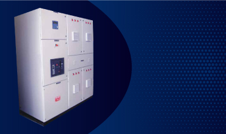

Automatic Power Factor Correction Panels
Automatic Power Factor Controllers
Electrical loads such as motors can cause electrical systems to be very inductive, which results in very ‘lagging power factor’ i.e. wastage of energy. The simple solution to maintain the power factor in required range is to connect or disconnect the power factor correction capacitors. Manual switching is just impossible for rapidly fluctuating loads and hence an automatic control system is required which continuously monitors the power factor and make
appropriate corrections to maintain it within the required range.
System Design
Baron Automatic Power Factor Correction System is unique with its Custom Based Design, based on the Load Study Conducted on site with High Speed Power Quality Analyzer with recording interval selected as appropriate to the study, depending on the Loading pattern.
The System is basically designed as a series RLC Circuit to suppress the transient inrush current, while injecting reactive current. Its Components Selection is critical due to the inherent operating parameters of the Capacitors which draws high inrush current during switching and while opening out. The Electrical charges remains in the capacitor thereby building up the Restriking Voltage. This characteristics of the Capacitors needs careful study and selection of the correct components to ensure long life for the total system.
The choice of capacitor duty contactors with damping resistors provide protection from inrush current during switching. The coil wound inductors provide additional protection from short time high current peaks. The sequential cyclic switching of capacitors with preset time delay for safe discharge of capacitors, increases the life of capacitors and avoids problems rooting from voltage peaks while energizing the charged capacitors at sinusoidal peak instants of supply voltage.
The selection of capacitor stages with appropriate stage ratios matching the load profile provides power factor correction with high-resolution.
Salient Features
Microprocessor based Power Factor Controller with special features
- Four Quadrant Measurement
- Accuracy of +0.8% for Reactive Power, + 0.5% for Current 6 or 12 steps to operate Capacitor Circuits.
- Precise and quick relay controls
- Continuous monitoring of defective capacitor stages.
- Counting, Storing and Display of number of switching operation
- Alarm for excess operation than programmed limits.
- Dual control curve characteristics: to avoid over compensation under light loads and to avoid inductive reactive power under regenerative conditions.
System Protection by incoming molded case circuit breaker selected with tripping characteristics for the individual capacitor circuit as well as multi bank parallel switching characteristics
Feeder Protection by MCB having tuned tripping characteristics to ensure avoidance of any inadvertent tripping by the inrush current of the capacitors.
Capacitor duty contactors with two sets of contacts, one for restricting inrush current and other for continuous loading of the capacitors, specially designed with the damping resistance to restrict the inrush current into capacitor stages energized
Direct Benefits
- Reduction in MD kVA
- Reduction in kWh Consumption
- Reduction in kVAh Charges
- Avoidance of PF Penalty
- Availing PF Incentive
Indirect Benefits
- Reduction/Avoidance of End Termination Darkening or Burn Outs
- Reduction/Avoidance of Motor Winding Failures
- Improved System Performance due to Healthy Voltage
- Low Electric Breakdowns/Reduced Plant Downtime